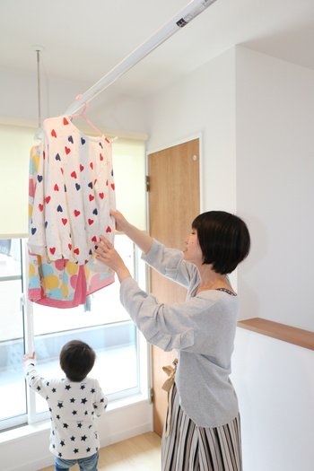

| 所在地 | 奈良県桜井市 |
|---|---|
| ご家族 | ご夫婦とお子様 |
| 出会い | ご友人の紹介 |
| 取材 | 旧サイト掲載の取材原稿より |
家づくりはそこまで考えていなかったのですが、ポストに他社さんの勉強会チラシが入っていたんです。子供が就学するまでに校区を決めたかったのもあり、家づくりを始めました。
私達夫婦ともに一軒家で育ったこともあり、一軒家に住みたいという気持ちはもともとありました。学校の校区のこともあるので、土地探しは慎重に行っていました。
シバサンホームでお家づくりをした友人の紹介でした。紹介してくれた友人のお家を見たときに、「凄くいいじゃん」と思いました。
桜井店が近くだったので気軽に行ってみると、印象はとてもよかったです。事務所の雰囲気もよかったですし、なにより子供たちが凄く気に入っていました。普通は子供を夫婦どちらかが見ないといけなくて話に集中できなかったりするのですが、子供を預かって面倒を見てくれたので、話に集中できました。
一番の悩みは、夫婦2人のこだわりポイントや、お金を掛けたいポイントが違うことでした。
主人がオプションにお金をかけすぎて、そう呼んでいましたね。お互いの好みや、お金をどこで抑えるか。一坪でも金額が変わるから、部屋の広さなどでも、たくさん話し合っていました。今では凄く気に入っています。

今はまだ使っていない子供部屋を、しっかりと使った生活を送ることと、思い出を沢山飾れるお家にしたいですね。夫婦共に写真やフォトブックが趣味なんです。子供の成長でお家のイメージを変えるのも楽しみです。お庭にもお花とか、家庭菜園など、まだまだ充実させたいことは沢山です。